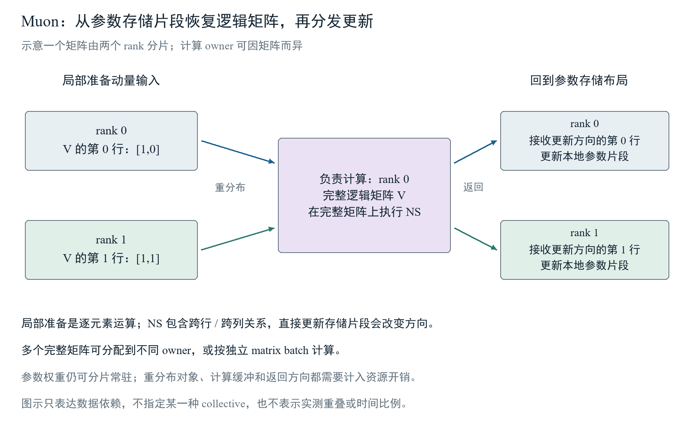

代码块旁的行号链接指向本课采用的提交，仓库及许可见课末。
1 线性层的输入、权重、累加与输出类型
设输入 X:[M,K]，PyTorch 权重 W:[N,K]，输出 Y=XWᵀ:[M,N]。磁盘 checkpoint 可以保存 BF16 权重，加载后转为打包 INT4；计算时 kernel 将权重还原到可乘的数值，使用 FP16 输入与浮点累加，最后写回 FP16。storage dtype、乘法输入格式、accumulator dtype、输出 dtype 对应四个不同阶段。标记 W4A16 只概括权重和激活位宽，尚未说明 scale、zero point、累加与输出。
先用 K=N=4096 计算一层权重。16,777,216 个数以 BF16 保存占 32 MiB。打包 INT4 的主体占 8 MiB；若每行沿 K 每 128 个数共享一个 FP16 scale 和一个 FP16 scaled zero，则额外占 0.5 MiB，共 8.5 MiB，压缩约 3.76 倍。这里尺寸恰好满足分组和布局要求；真实 checkpoint 还可能保留其他元数据、未量化层与加载缓冲。
同一矩阵的逻辑存储账；暂不计布局 padding 和额外副本
| 表示 | 主体 | scale 等 | 合计 |
|---|---|---|---|
| BF16 | 32 MiB | 无 | 32 MiB |
| INT4，组长128 | 8 MiB | FP16 scale + scaled zero：0.5 MiB | 8.5 MiB |
| MXFP8，组长32 | 16 MiB | 每组1 byte：0.5 MiB | 16.5 MiB |
| NVFP4，一维组长16 | 8 MiB | 每组1 byte + 全局FP32 | 9 MiB + 4 byte |
NVFP4 训练权重还可采用 16×16 的二维 scale 共享；上表明确采用一维表示，不能把它的开销直接用于所有训练配方。优化器保存的主参数、动量或 Adam 二阶矩也需要单独计入。把 GEMM 的输入换成 FP8，不会自动把这些长期状态全部减半。
本课从可还原的数值表示开始，逐步进入训练的方向性量化、三类 PTQ、推理 kernel 和 Muon。源码限定在本地实际克隆的固定提交；本课只进行纸面数例和本机标量核对，未运行训练、推理或 GPU benchmark。
把一项输出拆成可追踪的四步：加载打包权重，按通道或分组恢复计算值，与该行激活做乘加，将累积结果转成下一层要读的格式。三个权重元素即使在磁盘上都占四位，也不说明这次乘法、长 K 累积器和写回都占四位。检查后端时分别记录存储 dtype、操作数 dtype、累加 dtype 和最终输出，才能解释容量、误差及吞吐。
↑ 返回知识点目录2 INT4 的缩放因子与零点
s>0 是反量化步长，z 是表示实数零的整数编码。非对称 unsigned INT4 使用 q∈[0,15]，可以表示跨零且正负范围不对称的分组。对称 signed INT4 通常固定 z=0，但有效端点与饱和规则还取决于实现。INT4 的 16 个编码对应等间距网格，FP4 则采用随指数变化的间距。
设一组权重范围为 [−1,2]，则 s=(2−(−1))/15=0.2，z=5。数值 [−1,0,0.51,2] 对应编码 [0,5,8,15]，还原为 [−1,0,0.6,2]；0.51 的误差为 +0.09。若部署时出现 3，仍只会饱和到 2。扩大范围可以减少饱和，却会增大网格步长；缩小范围可以改善主体数值精度，却会截断更多尾部。
代码 1 AWQ 的分组范围与非对称 scale/zero 计算
org_w_shape = w.shape
if q_group_size > 0:
assert org_w_shape[-1] % q_group_size == 0
w = w.reshape(-1, q_group_size)
assert w.dim() == 2
if zero_point:
max_val = w.amax(dim=1, keepdim=True)
min_val = w.amin(dim=1, keepdim=True)
max_int = 2**n_bit - 1
min_int = 0
scales = (max_val - min_val).clamp(min=1e-5) / max_int
zeros = (-torch.round(min_val / scales)).clamp_(min_int, max_int)原始权重为 [N,K]，reshape(-1,q_group_size) 将每行的 K 方向分成多组；最后一维 K 必须是组长的整数倍，这样每组都完整落在同一行。每组单独计算最大最小值，clamp 防止常量组产生零步长。这里的 zeros 是整数域中的零点。
代码 2 模拟量化仍然返回还原后的浮点权重
if inplace:
(
(w.div_(scales).round_().add_(zeros)).clamp_(min_int, max_int).sub_(zeros)
).mul_(scales)
else:
w = (
torch.clamp(torch.round(w / scales) + zeros, min_int, max_int) - zeros
) * scales先除 scale、舍入、加零点并截断，再减零点和乘 scale。该函数用来评估量化误差，返回值仍是浮点张量；执行这段代码本身并未生成紧凑的 INT4 常驻存储或专用 GEMM。
舍入规则也影响边界值。PyTorch round 在恰好半格处采用 ties-to-even；随机舍入使用另一种规则。校准时使用的假量化应与部署 kernel 的饱和、舍入、分组方向和 zero point 编码一致，否则离线误差报告不能准确代表实际输出。
两个量化操作数的实数乘积是 sx·sw·(qx−zx)(qw−zw)。例如两项码字都等于自己的零点，正确贡献为零，但裸整数乘法 qx×qw 往往非零。内核可在解包时减零点，亦可利用行和、列和等修正整数点积。只有最终路径实现了相同修正，才能把两个实现的累计结果放到同一单位比较。
↑ 返回知识点目录3 BF16、FP16、FP8 与 FP4 的表示范围
浮点数的符号位决定正负，指数提供动态范围，尾数决定同一数量级内的分辨率。BF16 的 8 位指数接近 FP32 的范围，但只有 7 位显式尾数；FP16 有 5 位指数、10 位尾数，范围更窄、常用数量级内更细。它们均占两字节，适用行为仍有显著差异。
在 128 附近，BF16 相邻数间距为 1，FP16 为 0.125。因此一个 BF16 参数若直接加 0.25，按最近舍入可保持 128；同样更新在 FP16 可以被记录。FP32 主参数保存累积小更新，再将计算副本转为低精度，是解决更新分辨率问题的一种办法。loss scaling 则用于梯度数值范围，作用对象和原因需要分开理解。
本课采用的数值格式；特殊值语义以具体 dtype 为准
| 格式 | 显式指数/尾数 | 本课关心的性质 |
|---|---|---|
| BF16 | 8 / 7 | 大范围，参数小更新容易被舍入 |
| FP16 | 5 / 10 | 较细尾数，最大有限值65504 |
| FP8 E4M3FN | 4 / 3 | 最大有限值448；本课按FN变体 |
| FP8 E5M2 | 5 / 2 | 最大有限值57344，尾数更粗 |
| FP4 E2M1 | 2 / 1 | 绝对值集合0、0.5、1、1.5、2、3、4、6 |
代码 3 Transformer Engine 显式定义各格式的最大幅值
E2M1 = _FormatHelper(max_fwd=6, max_bwd=6)
E4M3 = _FormatHelper(max_fwd=448, max_bwd=448)
E5M2 = _FormatHelper(max_fwd=57344, max_bwd=57344)
HYBRID = _FormatHelper(max_fwd=E4M3.max_fwd, max_bwd=E5M2.max_bwd)
UE5M3 = _FormatHelper(max_fwd=114688, max_bwd=114688)HYBRID 在前向使用 E4M3，反向使用 E5M2。它表达一个配方中的方向选择；MXFP8 等细粒度配方可以选择前后向都用 E4M3，不能把 HYBRID 当成全部 FP8 训练的固定规则。
E4M3 的量化误差随数量级变化。例如落在 [1,2) 内的普通规格数间距为 1/8，在 [128,256) 则为 16。scale 把原始数据移动到更合适的区间，无法增加尾数位数。低精度乘法后使用 FP32 累加，可减少大量乘积相加时继续丢失的部分，但无法找回已经在输入量化时丢掉的信息。
数值 1 附近，两个可表示邻点之间的距离取决于尾数字段；数值放大一倍跨进下一指数段，邻点距离也可能翻倍。因此“误差不超过半个固定格距”适合给定均匀整数网格，不能直接给整个浮点数轴一个常量。测试低精度格式时应覆盖近零、分段边界、最大有限值和输入缩放后的饱和区。
↑ 返回知识点目录4 GEMM 归约中的分组缩放
沿用 Y=XWᵀ，令 X 的第 m 行、第 g 个 K 分组共享 sX[m,g]，W 的第 n 行、同组共享 sW[n,g]。如果 scale 随 K 分组变化，每组点积必须带上自己的 scale 乘积后再累加。仅在所有 K 元素共享相同系数时，才能把统一的 scale 移到完整点积之外。
一个四元素点积可以直接看出差别：X=[1,2,10,20]，W=[3,4,0.5,1]，分成两个二元素组。若编码分别为 qX=[1,2,1,2]、qW=[3,4,1,2]，scale 为 sX=[1,10]、sW=[1,0.5]，两个整数域点积为 11 与 5，恢复结果为 11+10×0.5×5=36。把两个点积先合成 16，再乘单一系数会破坏这组计算。
低比特乘法中，尺度能否放到归约外取决于它沿哪个轴变化。对两个 K 分组，先分别将整数乘积相加得到 u、v，再按两个分组各自的输入尺度乘权重尺度恢复实数。若两组乘积尺度为 0.25、2，整数部分和为 8、−3，则输出 8×0.25−3×2=−4。将整数部分先相加得到 5，已经丢掉哪部分应乘 2 的信息。相反，若一个输出行和一个输出列各自的尺度都沿 K 不变，可把它们的乘积统一移到这一输出元素的归约之后。
代码 4 DeepGEMM 沿每个 token 的 K 方向分组
def per_token_cast_to_fp8(x: torch.Tensor, use_ue8m0: bool, gran_k: int = 128,
use_packed_ue8m0: bool = False) -> Tuple[torch.Tensor, torch.Tensor]:
assert x.dim() == 2
assert not use_packed_ue8m0 or use_ue8m0
m, n = x.shape
padded_n = align(n, gran_k)
x_padded = torch.empty((m, padded_n), dtype=x.dtype, device=x.device).fill_(0)
x_padded[:, :n] = x
x_view = x_padded.view(m, padded_n // gran_k, gran_k)
x_amax = x_view.abs().float().amax(dim=2).view(m, padded_n // gran_k).clamp(1e-4)
sf = x_amax / 448.0
sf = ceil_to_ue8m0(sf) if use_ue8m0 else sf
x_fp8 = (x_view * (1.0 / sf.unsqueeze(2))).to(torch.float8_e4m3fn).view(m, padded_n)[:, :n].contiguous()x_view:[M,ceil(K/gran_k),gran_k]。amax 对最后一维归约，每个 token 可以有多个 scale；默认 gran_k=128。sf=amax/448 是反量化系数，量化时使用 1/sf。名称 per_token 不意味着整行只用一个 scale。
末组先补零，输出数据裁回原 K；scale 仍保留末组的一个系数。use_ue8m0 会把系数向上取为二的幂，这改变了量化网格。
若 amax=3，普通系数约为 3/448≈0.006696；向上取二的幂后为 1/128，最大编码降到 384。这样可用 E8M0 描述 scale，也留下数值余量，但量化网格更粗。全零组的 amax 下界用于避免除零，不能把这个数值保护解释为真实观测到的幅值。
在硬件上，scale 可以由专门的 block-scaled 指令参与运算，也可能由 kernel 在局部累加后恢复；具体路径取决于架构与实现。scale 的逻辑形状、内存排列、tile 方向、Tensor Core 指令支持必须一起匹配。仅把普通 GEMM 的指针 dtype 换成 FP8，无法自动满足这些合同。
判断尺度能否提到点积之外，可以把求和下标 k 沿整行滑动：只要两操作数的恢复系数之积随 k 改变，这一项就须在相应的分组部分和上应用。反过来，即使两个操作数各自尺度不同，只要乘积在整个归约范围恰好相同，代数上仍可提取这一共同值。实际内核一般依赖预先声明的布局，不能从一次数据巧合推断格式支持。
情境 一个低比特 GEMM 的 K 轴切成两组，解码后两组分别应乘 0.25 和 2。对输出元素 A 两组的整数乘积和为 (8,−3)，对 B 为 (2,3)。拟议内核在写出之前丢弃组边界，仅保存每个元素的整数总和。
问题 先按组还原 A、B 的实数值，再判断给整张输出乘一个标量能否同时修准两项。进一步，假如增加了按输出元素选择比例的机制，但只允许比例依赖已保存的整数总和，可以恢复吗？解释信息在哪一步丢失。
答案
结论 A 应为 −4，B 应为 6.5。两个总和同为 5，任何只看这个 5 的确定性后处理都无法同时得到这两个结果。
推导 A=8×0.25−3×2，B=2×0.25+3×2。连正负号都不同。归约时两个组的贡献发生抵消或增强，而压成总和后不再能反推各组占多少。
正确内核可逐组施加相应恢复乘数再加，或保留各组整数部分和直到恢复阶段。只有两组乘数相同等附加条件下，才能把尺度整体移到归约之后。
5 即时缩放与延迟缩放
Current scaling 先读取当前张量求 amax，再用当前范围量化，数据依赖清晰。若无法与上游生产过程融合，这通常需要一次 amax 读取和一次转换读取。Delayed scaling 从历史 amax 预测本轮系数，在量化当前数据时同步收集新的 amax，留给后续轮次；这样可以避免当前量化之前的完整 amax 扫描。
两套代码的 scale 命名方向恰好不同。前面 DeepGEMM 的 sf 是还原时相乘的系数；下面 TE 的 scale 是量化前相乘的放大倍数。令 amax=7、FP8_MAX=448、margin=0，则 TE scale=64，而还原系数为 1/64。只抄变量名、不核对乘除方向，会得到数值相反的实现。
代码 5 TE delayed scaling 更新量化前的乘数
sf = (fp8_max / amax) / (2**margin)
sf = torch.where(amax > 0.0, sf, scale)
sf = torch.where(torch.isfinite(amax), sf, scale)
sf = torch.where(torch.isinf(sf), torch.full_like(sf, _fp32_max), sf)
scale.copy_(sf)
return scalemargin 增大一位，scale 缩小一半，给更大的输入留下幅值余量。amax 为零或非有限值时保留旧系数，溢出的 scale 则截到 FP32 最大有限值；这些保护不等于该轮数据已恢复正常。
代码 6 从历史窗口选择幅值，再推进历史缓冲
"""Default function to obtain amax from history."""
if amax_compute_algo == "max":
amax = torch.max(amax_history, dim=0).values
else: # amax_compute_algo == "most_recent"
amax = amax_history[0].clone()
amax_history = _update_amax_history(amax_history)
return amax_history, amaxmax 策略使用整个窗口最大值，most_recent 使用最近记录。历史窗口长度控制对过去异常峰值的记忆；窗口过长可能长时间使用偏保守网格，过短则更容易跟不上幅值突变。
例如历史幅值最大为 7，本轮突然出现 14。旧 scale=64 会把它映成 896，超出 E4M3FN 的 448；具体 cast 会发生相应的越界处理，无法保证无损。margin=1 把 scale 降至 32，此值恰好到 448，但普通值的有效网格也随之变粗。监测饱和比例、零比例、amax 和输出误差，比只看平均 loss 更容易定位问题。
分布式系统还要规定 amax 的归约域。一个在多个 rank 间拼接后共享系数的张量，需要一致的 scale 语义；不同独立 block 则可以各自缩放。checkpoint 与重计算也要保留或恢复相应的历史状态，避免同一逻辑步骤重复推进历史。低精度引入了额外训练状态，不能只保存参数和 optimizer。
假设整数范围 ±127，上一轮记录 absmax=1，本轮尖峰升到 4。沿用旧步长 1/127 时，4 将被截到 127，恢复仅为 1。当前轮即时统计能选 4/127 并保住极值，但小值分辨率会变粗。延迟缩放的历史窗口、更新时机和余量，共同决定尖峰过后多久才能降低尺度。检查误差时把同一张量的 amax、实际应用尺度和截断数按轮对齐。
↑ 返回知识点目录6 MXFP8 的行向与列向量化
标准的一维 MXFP8 将连续 32 个数据共享一个 E8M0 scale：数据通常为 E4M3，scale 只表示二的幂。若没有 padding，一个 32 元素块占 32+1=33 byte，等效每元素 8.25 bit。scale 自身也占存储与加载带宽；它虽然没有尾数，却仍然需要正确的编码、偏置及特殊值处理。
一层训练至少包含 Y=XWᵀ、dX=dYW、dW=dYᵀX 三个 GEMM。它们的归约方向不同：前向沿 K，权重梯度沿 M。行内的 32 个数和列内的 32 个数可能拥有完全不同的幅值范围，所以一个行向量化张量的简单转置，无法自动成为理想的列向量化张量。TE 在需要时从高精度源分别生成两份，避免先反量化再量化造成二次误差。
代码 7 行向与列向表示拥有独立 data 和 scale 缓冲
shape = tuple(shape)
specs: Dict[str, Tuple[Tuple[int, ...], torch.dtype]] = {}
if self.rowwise_usage:
specs["_rowwise_data"] = (shape, torch.uint8)
specs["_rowwise_scale_inv"] = (
tuple(self.get_scale_shape(shape, columnwise=False)),
torch.uint8,
)
if self.columnwise_usage:
specs["_columnwise_data"] = (shape, torch.uint8)
specs["_columnwise_scale_inv"] = (
tuple(self.get_scale_shape(shape, columnwise=True)),
torch.uint8,
)
return specsrowwise_usage 和 columnwise_usage 分别控制两组缓冲。底层容器使用 uint8 存储字节；解释这些字节时仍按 FP8 数据或 E8M0 scale 语义。不能依据容器 dtype 把它们当成普通整数矩阵。
代码 8 scale 还要补齐库要求的二维布局
if columnwise:
# Columnwise: scale_inv shape is [ceildiv(prod(shape[:-1]), BLOCK_SIZE), shape[-1]]
# with padding to multiples of [4, 128]
return (
round_up_to_nearest_multiple(
ceil_div(math.prod(shape[:-1]), MXFP8_BLOCK_SCALING_SIZE), 4
),
round_up_to_nearest_multiple(shape[-1], 128),
)
# Rowwise: scale_inv shape is [prod(shape[:-1]), ceildiv(shape[-1], BLOCK_SIZE)]
# with padding to multiples of [128, 4]
return (
round_up_to_nearest_multiple(math.prod(shape[:-1]), 128),
round_up_to_nearest_multiple(ceil_div(shape[-1], MXFP8_BLOCK_SCALING_SIZE), 4),
)对逻辑 [M,K]，行向 scale 理论上是 [M,ceil(K/32)]，实际维度补到 [128,4] 的倍数；列向则相应补到 [4,128] 的倍数。swizzle 再调整硬件读取顺序。
对 4096×4096，两份 MXFP8 数据及一维 scale 合计约 33 MiB，略多于单份 BF16 的 32 MiB，尚未计仍存活的高精度源。对 rowwise-only 的 [1,4096]，数据 4 KiB，scale 的物理形状为 [128,128]，占 16 KiB；仅这两个缓冲已达 20 KiB。这个极小形状说明平均 8.25 bit 的逻辑账不能直接代替每次分配的物理账。

图 1：方向性分组决定两套 scale；小形状还可能由 scale padding 主导容量。
TT 的量化转换器还检查 fused QKV 的 head_dim 是否为权重 block size 的整数倍，避免一个共享 scale 横跨 Q、K、V 的语义边界。训练保存哪一份张量则要结合激活生命周期：前序 attention 若已经为反向保留 BF16 输出，再额外保存其 MXFP8 副本可能增加峰值。
代码 9 融合 QKV 的 scale 分组不能跨越不合适的边界
block_size = MXFP8Linear.WEIGHT_BLOCK_SIZE
for fqn, _config, parent, _attr in targets:
if isinstance(parent, QKVLinear.Config) and parent.head_dim % block_size:
raise ValueError(
"MXFP8 quantization of fused QKV requires head_dim divisible "
f"by {block_size} so weight scale blocks do not span Q, K, "
f"or V; got {fqn!r} with head_dim={parent.head_dim}."
)转换器在模型构造阶段拒绝不满足整除条件的 head_dim。这个检查发生在量化 kernel 之外，体现模型布局与低精度块布局之间的约束。
举一个 2×2 分组示意，第一行幅值都为 1、第二行都为 100。按行各用一个尺度可同时贴合两行；转置后每个连续组都含 1 和 100，按新行重新定标会使小值精度下降。真实 MX 块更长，但坐标关系相同。保存转置视图只改变寻址顺序，不能替代从高精度源按新组重新量化。
↑ 返回知识点目录7 NVFP4 的两级缩放与舍入
NVFP4 的基础表示使用 E2M1 数据，每 16 个连续值共享一个 E4M3 block scale，整个张量再共享 FP32 global scale。全局系数扩展 block scale 可覆盖的原始数值范围。以常规配方为例，global scale 可由全张量 amax/(448×6) 得到，再把各 block 的幅值映入 E4M3 可表示范围。所有量化系数都要参与还原。
选 global amax=2688，global scale=1；某块 amax=12，block scale=2。这两个系数恰好可精确表示。块内 x=[1,2,3,6,12] 被映成 E2M1 值 [0.5,1,1.5,3,6]，可原样还原。若 x=5，则缩放后为2.5，最近偶数规则将其量化到2，还原为4；邻近的6也同样相距1，边界舍入规则决定最终选择。
代码 10 训练配方对输入、权重和输出梯度采取不同处理
# Quantization params
# Note: RHT is currently only applied to column-wise usage so that
# it can be used for wgrad GEMM.
self.fp4_quant_fwd_inp = QParams(
random_hadamard_transform=not self.disable_rht,
stochastic_rounding=False,
fp4_2d_quantization=False,
)
self.fp4_quant_fwd_weight = QParams(
random_hadamard_transform=False,
stochastic_rounding=False,
fp4_2d_quantization=not self.disable_2d_quantization,
)
self.fp4_quant_bwd_grad = QParams(
random_hadamard_transform=not self.disable_rht,
stochastic_rounding=not self.disable_stochastic_rounding,
fp4_2d_quantization=False,
)默认权重使用二维 16×16 量化块；输入和梯度使用一维块。梯度启用 stochastic rounding；RHT 标志用于输入与梯度，并由注释限定在 columnwise usage，以服务 wgrad。不能据此声称所有前向矩阵乘法都额外执行 RHT。
随机舍入对两相邻可表示数 a<b，按 P(b)=(x−a)/(b−a) 向上取值，因而在区间内的数学期望为 x。例如 x=1.2、邻点1和1.5，向上概率0.4，期望为1.2。这个无偏关系针对单次区间内舍入；饱和、scale 误差以及网络的非线性传播仍会带来误差，不能由此推出整个训练无偏。
RHT 使用归一化 Hadamard 及随机符号构成正交变换。权重梯度 dW=dYᵀX 中，对归约维两侧都应用同一 H，得到 (HdY)ᵀ(HX)=dYᵀHᵀHX=dYᵀX。变换把少量大幅值分散到多个坐标，使窄格式更容易覆盖；只变换一边或用错符号则改变结果。量化后仍有近似误差，实际收益需在具体模型和形状下评估。
二维权重块让转置后的分组更对称，也把多个行列的幅值共享范围绑定在一起。它与一维16元素块的精度和元数据开销均不同。当前 TE 配方还存在可选扩展；本课用上面摘录中的默认路径说明原理，部署时须核对 checkpoint 的实际 recipe 配置。
两级尺度有两个职责：块内尺度说明本组码本的一格对应多大的原始数，全局尺度让存放块尺度的低位格式覆盖整个张量的幅值。解包时先选正确的 16 值组，再把两级恢复乘数与码本值组合。若两个相邻组共用错同一个尺度，通常表现为整组出现相同比率的偏差；单个 nibble 顺序错则更像相邻元素互换。
情境 解包一个四位值后，码本查到实数 3。接口文档规定，本次传入的块参数 2 和全局参数 0.5 都是恢复乘数，输出按“码本值×块参数×全局参数”计算。另一实现对最后一个参数先取了倒数。
问题 分别给出两个实现的每一步乘积，并算错误输出相对正确输出的倍率。若要把错误定位到尺度方向，而不误指 nibble 打包或码本，如何分两次设置测试输入？
答案
结论 正确路径为 3→6→3，取倒数路径为 3→6→12，相差 4 倍。应先验证码字解出的 3，再单独改变全局尺度。
推导 两路径的差别集中在最后一个乘数：0.5 与 1/0.5=2。拿二者相除得 4。
首先用两级尺度都为 1 的已知码检验输出为 3；通过后固定码字与块尺度 2，只把全局尺度从 1 改成 0.5。正确结果从 6 降至 3，若升到 12 可直接区分这两个约定。
情境 要估算一块 4096×4096 的权重由 BF16 换成打包 FP4 后的设备占用。BF16 每元素 2 B，两个 FP4 共用一个字节。方案甲沿每行每 16 个元素写一个 1 B 尺度；方案乙每个 16×16 方块写一个 1 B 尺度。两种格式均另存一个 4 B 全张量尺度，不计填充与转置。
问题 从元素数开始，分别算原 BF16 和两种 FP4 共有的数据主体。再按各自的块几何求尺度个数、尺度总字节和最终精确总量。甲比乙多出的字节来自哪一项？
答案
结论 原权重 33554432 B；两种主体均 8388608 B。甲合计 9437188 B，乙合计 8454148 B，相差 983040 B，全部来自块尺度。
推导 4096×4096=16777216。甲每行分 256 段，共 1048576 个块尺度；乙沿两轴各分 256 段，共 65536 个。
将主体、块尺度和一次全局尺度相加，即 8388608+1048576+4 与 8388608+65536+4。码字位宽相同不保证文件同样大；较粗的组让更多值共用同一个尺度，其精度需另行考查。
8 FP4 的编码与打包
E2M1 的三位幅值编码依次表示 [0,0.5,1,1.5,2,3,4,6]，第四位为符号。打包把两个四位编码放进一个字节；这个字节的整数值与原浮点数没有直接的算术关系。加载时必须按约定拆出高低半字节，再以对应的浮点编码和 scale 解释。
代码 11 DeepGEMM 参考转换函数显式写出 E2M1 舍入边界
def _quantize_to_fp4_e2m1(x: torch.Tensor) -> torch.Tensor:
ax = x.abs()
# {0, 0.5, 1, 1.5, 2, 3, 4, 6}
# midpoints: 0.25, 0.75, 1.25, 1.75, 2.5, 3.5, 5.0
code = torch.zeros_like(x, dtype=torch.uint8)
for boundary, round_up in zip(
(0.25, 0.75, 1.25, 1.75, 2.5, 3.5, 5.0),
(False, True, False, True, False, True, False),
):
code += (ax >= boundary if round_up else ax > boundary).to(torch.uint8)
sign = (x < 0) & (code != 0)
code = code | (sign.to(torch.uint8) << 3)
return code.view(torch.int8)七个 boundary 对应八个幅值格点；交替使用 > 与 >= 实现边界上的 ties-to-even。sign 只对非零编码设置，因此这个函数把量化为零的负输入也归到正零。
代码 12 先分组缩放，再把两份编码打包到一个字节
padded_n = align(n, gran_k)
x_padded = torch.zeros((m, padded_n), dtype=x.dtype, device=x.device)
x_padded[:, :n] = x
x_view = x_padded.view(m, -1, gran_k)
x_amax = x_view.abs().float().amax(dim=2).clamp_min(1e-4)
sf = x_amax / 6.0
sf = ceil_to_ue8m0(sf) if use_ue8m0 else sf
x_scaled = x_view * (1.0 / sf.unsqueeze(2))
codes = _quantize_to_fp4_e2m1(x_scaled).view(m, padded_n) # int8, (m, padded_n)
codes2 = codes.view(m, padded_n // 2, 2)
packed = (codes2[:, :, 0] & 0x0F) | ((codes2[:, :, 1] & 0x0F) << 4) # int8偶数位置写入低四位，奇数位置左移四位后写入高半字节。函数默认 gran_k=128，sf 可以保留 FP32 或限制为二的幂；该默认表示与 NVFP4 的16元素/E4M3/全局scale格式不同。
例如缩放后的 [1,−2] 编码为 2 与 12，打包结果为 2|(12<<4)=194，即十六进制 C2。若反量化系数为0.5，恢复值为 [0.5,−1]。只交换高低半字节会颠倒两个特征；把 C2 当作 signed int8 的 −62 参与整数 GEMM 则完全改变运算。

图 2：相同正半轴范围下，等间距整数网格与E2M1浮点格点的分布。
MXFP4 通常用32元素块和 E8M0 scale，NVFP4 基础格式用16元素块、E4M3 block scale 与 FP32 global scale；MXFP6 还包含不同6位浮点格式。即使有效 payload 位数接近，打包、分组、scale 与指令路径仍不同。DeepGEMM 某个工具支持生成 FP4 编码，也不能据此推断任意 GPU 都能直接执行所有这些格式。
保存模型时应记录 quantization method、组长、scale dtype、zero point 约定、轴向、打包顺序和预期 kernel。读取端常要将通用 checkpoint 重排为某一 kernel 的布局，这会增加加载时间与临时显存。部署兼容性应以实际加载与分派路径为准。
若格式约定先到的索引放低四位，连续索引 1、6 应写成十六进制 0x61。解包先与 0x0F 按位与取 1，再右移四位取 6。把顺序反过来通常能完整读回码字集合，却交换每对元素。用两个不同码字、相同尺度先测顺序，再保持码字不变改尺度，就能把两个常见错误分离。
↑ 返回知识点目录9 SmoothQuant 的通道缩放
PTQ 使用已训练权重和校准样本确定量化参数。LLM 的某些激活通道长期有较大幅值：若整行激活共享一个 scale，少数通道会扩大所有通道的步长。SmoothQuant 选择通道缩放矩阵 S=diag(s₁,…,sK)，在不改变高精度线性映射的条件下，把激活除以 S、权重的输入通道乘以 S。
这里 S 为实数对角矩阵，因此 Sᵀ=S。权重采用 PyTorch 的 [N,K] 排列，乘 S 作用于列；若使用 [K,N] 的数学记法，则对应缩放权重行。先声明形状可避免把缩放方向抄反。
代码 13 先计算通道幅值，再将变换折叠到 LayerNorm 与后续 Linear
act_scales = act_scales.to(device=device, dtype=dtype)
weight_scales = torch.cat(
[fc.weight.abs().max(dim=0, keepdim=True)[0] for fc in fcs], dim=0
)
weight_scales = weight_scales.max(dim=0)[0].clamp(min=1e-5)
scales = (
(act_scales.pow(alpha) / weight_scales.pow(1 - alpha))
.clamp(min=1e-5)
.to(device)
.to(dtype)
)
ln.weight.div_(scales)
ln.bias.div_(scales)
for fc in fcs:
fc.weight.mul_(scales.view(1, -1))weight_scales 按输入通道取最大值，并对共享同一输入的多个 Linear 合并。scales=act_scales^alpha / weight_scales^(1−alpha)，随后前序 LayerNorm 的 weight、bias 除 scales，所有对应 Linear 的列乘 scales。
这个折叠保持前序仿射输出的对应关系，推理时可省掉显式除法。一个节点有 Q/K/V 等多个消费者时，必须同步处理所有相关分支，否则部分输出会改变。
令某校准输入为 X=[100,1]，权重行为 W=[0.01,1]。原输出为2；按该例的通道极值与 alpha=0.5，S=[100,1]，得到 X′=[1,1]、W′=[1,1]，输出仍为2。这个极简数例体现等价变换；真实校准对许多 token 统计极值，通道分布也不会全部被压成相同数值。
alpha 接近1时更充分地压低激活离群值，同时增加权重难度；接近0时更多保护权重范围。W8A8 的目标是让两侧共同适合 INT8 GEMM。校准集必须覆盖实际请求的长度、语言、代码、图像等输入类型，且要防止某个极端样本支配全部 scale。折叠前后的高精度等价检查与量化后的质量检查是两项独立工作。
以单个输入通道占比观察，原本 x=16、w=0.5，贡献为 8。选平滑系数 4 后，输入变 4、对应权重变 2，实数乘积仍为 8。若再增大系数，激活更易落入可表示范围，但同一量化组内这个权重的幅值会抬高该组步长。调参应同时观察激活截断和权重舍入后的层输出，单看激活范围会偏爱过大的迁移系数。
↑ 返回知识点目录10 GPTQ 的逐列误差补偿
逐个权重就近舍入只优化权重本身的误差，实际层输出还受到输入通道相关性的影响。固定校准输入 X:[M,K]，GPTQ 近似求解让 X(W−Q)ᵀ 尽可能小的量化权重 Q。对每个输出行，目标可写成由 XᵀX 加权的二次误差；校准中很少出现的方向与频繁出现的方向拥有不同代价。
代码 14 逐批累计校准输入的二阶统计量
self.H *= self.nsamples / (self.nsamples + tmp)
self.nsamples += tmp
# inp = inp.float()
inp = math.sqrt(2 / self.nsamples) * inp.float()
# self.H += 2 / self.nsamples * inp.matmul(inp.t())
self.H += inp.matmul(inp.t())此处 inp 已变为 [K,样本位置数]，因此 inp@inp.T 得到 [K,K]。nsamples 与批次统计共同给出归一化；H 是该层校准重建目标的二阶信息，不能称为整个语言模型损失的完整 Hessian。
代码 15 加阻尼，并保存逆矩阵的上三角 Cholesky 因子
damp = percdamp * torch.mean(torch.diag(H))
diag = torch.arange(self.columns, device=self.dev)
H[diag, diag] += damp
H = torch.linalg.cholesky(H)
H = torch.cholesky_inverse(H)
H = torch.linalg.cholesky(H, upper=True)
Hinv = HH 先加均值对角项的一部分以改善数值条件，再求 Cholesky、求逆、再次上三角 Cholesky。虽然变量叫 Hinv，最终对象实际为 H⁻¹ 的三角因子；用未分解的逆矩阵替换后面代码会改变算法。
代码 16 量化误差先在块内补偿，再批量传播到块外
q = quantize(
w.unsqueeze(1), self.quantizer.scale, self.quantizer.zero, self.quantizer.maxq
).flatten()
Q1[:, i] = q
Losses1[:, i] = (w - q) ** 2 / d ** 2
err1 = (w - q) / d
W1[:, i:] -= err1.unsqueeze(1).matmul(Hinv1[i, i:].unsqueeze(0))
Err1[:, i] = err1
Q[:, i1:i2] = Q1
Losses[:, i1:i2] = Losses1 / 2
W[:, i2:] -= Err1.matmul(Hinv[i1:i2, i2:])w 为当前列的全部输出通道，q 为量化结果，d 为三角因子当前对角。err1=(w−q)/d，将误差按当前因子的行传播到剩余列；Err1 收集一个 block 的误差，最后用矩阵乘法更新后续 block。
blocksize 控制误差更新的执行分块，groupsize 控制共享量化参数的权重分组，两者承担不同职责。
手算一个正定例子：H=[[2,1],[1,2]]，一行权重 w=[0.6,0.6]，整数格点。先把第一项变为1，误差δ₁=0.4；在第二项尚可连续调整时，使二次误差最小的改变量为δ₂=−H₂₁δ₁/H₂₂=−0.2，因而第二项由0.6调到0.4，再量化为0。最终 Q=[1,0] 的 δᵀHδ=0.56；两项独立就近舍入得到[1,1]，误差为0.96。示例未加阻尼，用于解释补偿方向。
代价包括构建和处理 [K,K] 统计量。K=4096 的 FP32 H 为64 MiB，K=11008 时约462.25 MiB，还未计分解工作区、权重与校准激活。GPTQ 的主要开销发生在离线量化阶段；在线推理仍需一个兼容的权重打包及 kernel，不能因为校准算法更精细就推断线上更快。
若校准数据的两个输入通道总满足 x1=x2，调整权重误差为 [δ,−δ] 时，所有这类样本的输出误差恰为零。上线若出现 x1 与 x2 明显不同的输入，同一补偿就不再抵消。这说明离线重建目标由校准输入张成的方向决定；检查条件数和加入阻尼能改善数值稳定，但不能替缺席的输入分布提供证据。
↑ 返回知识点目录11 AWQ 的通道保护与误差搜索
Weight-only 量化保留较高精度激活，目标通常是在小 batch decode 中减少权重读取。AWQ 利用输入分布判断哪些通道的权重量化误差更影响输出，并通过等价缩放扩大相应权重的有效分辨率。它将结果落实到可统一打包的低比特权重，避免必须为少量离群权重单独走另一条计算支路。
代码 17 枚举通道缩放强度，并比较模块输出误差
for ratio in range(n_grid):
ratio = ratio * 1 / n_grid
scales = x_max.pow(ratio).clamp(min=1e-4).view(-1)
scales = scales / (scales.max() * scales.min()).sqrt()
for fc in linears2scale:
fc.weight.mul_(scales.view(1, -1).to(fc.weight.device))
fc.weight.data = w_quantize_func(fc.weight.data) / (scales.view(1, -1))
out = block(x, **kwargs)
if isinstance(out, tuple):
out = out[0]
loss = (
(org_out - out).float().pow(2).mean().item()
) # float prevents overflow
history.append(loss)
is_best = loss < best_error
if is_best:
best_error = loss
best_ratio = ratio
best_scales = scales
block.load_state_dict(org_sd)n_grid=20，ratio 为0到0.95的网格。x_max 来自 get_act_scale 的激活幅值统计；本提交采用平均绝对幅值。对每组候选，把权重乘 scales、模拟量化、再除 scales，计算模块输出的 FP32 均方误差，保留最优候选。
每轮 load_state_dict(org_sd) 恢复原始参数，确保候选比较基于同一权重。该过程没有反向训练权重，但明确执行了校准前向和输出误差搜索。
用两通道说明保护作用：x=[10,1]，w=[0.1,1]，真实输出为2。若用幅值最大值确定、步长为1的极粗对称量化，w 变为[0,1]，输出只剩1。取 S=[10,1] 后，w′=[1,1] 可准确落在格点上，x′=[1,1]，输出仍为2。实际 INT4 的网格更密，且同组其他权重会改变 scale，因此需要按实际模块输出搜索，不能只保证某一个权重变大。
SmoothQuant 与 AWQ 都可用对角等价变换，但优化条件不同：前者为 W8A8 平衡激活与权重范围；后者主要为 weight-only 场景保护敏感权重通道。GPTQ 则通过输入相关性补偿量化误差。三者可以产生不同元数据与布局，模型文件上的方法名应同时对应其实际量化配置。
AWQ 的校准统计与应用输入相关。若校准样本以普通短文本为主，上线请求却以长代码或多模态输入为主，低比特误差可能集中在未覆盖的通道。质量验证需要保留一份独立于校准的数据，并检查长序列、稀有 token 和业务关键输出；单个平均 perplexity 不能解释所有退化。
若某列权重的舍入误差只有 0.02，但相应激活在业务里常取 50，该列对一个输出的偏差就可能达 1。另一列误差 0.1、激活常在 0.1 附近，典型偏差仅 0.01。通道保护倾向让前者在共享网格上得到更好分辨率；最终仍看整层重建误差，因为不同列的误差可能相消或叠加。
情境 一个标量通道输出 y=x·w，使用两种量化方案后，权重误差（量化值减原值）分别为 A=[0.1,0]、B=[0,0.1]。同一批校准样本中有两种输入，x1=[10,1]、x2=[1,10]，第一种占 90%。
问题 比较两种权重误差的 L2 长度；分别列出它们在两种输入上的输出改变量。若按这批样本上的平均绝对输出误差选择，选哪种？若上线样本比例对调，结论会怎样？
答案
结论 两个权重误差长度同为 0.1。A 在两输入上为 1、0.1，B 为 0.1、1。90% 为 x1 时选 B；分布对调后选 A。
推导 对每一行直接计算 x·Δw。当前分布下 A 的平均绝对误差为 0.9×1+0.1×0.1=0.91，B 为 0.9×0.1+0.1×1=0.19。
权重误差的坐标方向决定它与输入有多大投影。权重本身的 L2 长度看不到这一点，因此校准集还要覆盖预期上线分布和稀有高影响输入。
12 低比特推理的 GEMV、GEMM 与 KV 开销
代码 18 同一份量化权重按输入行数选择 GEMV 或 GEMM
def forward(self, x):
# out_shape = x.shape[:-1] + (self.out_features,)
# inputs = x.reshape(-1, x.shape[-1])
inputs = x
if inputs.numel() / inputs.shape[-1] < 8:
out = awq_inference_engine.gemv_forward_cuda_new(
inputs,
self.qweight,
self.scales,
self.scaled_zeros,
inputs.numel() // inputs.shape[-1],
self.out_features,
self.in_features,
self.group_size,
)
else:
out = awq_inference_engine.gemm_forward_cuda_new(
inputs, self.qweight, self.scales, self.scaled_zeros
) # - 8.0 * self.scales)
out = out + self.bias if self.bias is not None else out
# print(out)
# assert 0有效行数 inputs.numel()/inputs.shape[-1] 小于8时调用 GEMV，其他情况调用 GEMM；两条路径都接收 qweight、scales、scaled_zeros。这是该提交的具体阈值，其他引擎与硬件可采用不同策略。
scaled_zeros 预先编码了 −scale×zero，所以恢复权重时可做 q×scale+scaled_zero。打包与重排由 WQLinear.from_linear 和 pack_intweight 完成，不能用前面的假量化浮点权重代替。
对第一节4096²矩阵，教学带宽设为1 TB/s，且假设权重完全从 HBM 读一次、其他开销忽略：BF16 读32 MiB的下界约0.0336 ms，INT4含元数据读8.5 MiB约0.00891 ms。两者只反映权重流量。实际时间还包含激活/输出、解包、反量化、scale读取、launch以及计算；量化后的算子若多出一次完整 BF16 权重写回和再读取，节省会明显缩水。
M很小时，权重读取难以被许多 token 平摊，融合解包/反量化的 weight-only kernel 较容易受益。M增大后，矩阵乘法的复用和计算吞吐更重要；W4A16 不必然执行原生 INT4×INT4 指令，可能在寄存器中恢复浮点权重后使用浮点 MMA。W8A8、FP8与原生 block-scaled FP4 的计算路径还需分别确认。
权重量化只直接改变权重侧。KV cache 仍可能使用 BF16，并随上下文和并发增长；把 W4 模型装入显存后，长请求仍可能被 KV 或调度预算限制。KV 量化会额外引入按层、按头或按块 scale、写入时量化及读取时反量化；attention 中 K 误差通过 softmax 传播，V 误差进入加权输出，其质量风险与线性权重量化不同。
同样，低精度 GEMM 并未自动缩小 TP AllReduce、MoE AllToAll 或参数梯度的网络字节量。通信张量的实际 dtype 和 scale 协议要另行查看。若一个路径发送 FP8 payload 却又携带 BF16 副本、重新量化工作区或额外布局转换，总收益应按整条关键路径衡量。
若单卡一个权重矩阵需要读取 32 MiB，同一轮一行输入与 64 行输入在理想复用下都可以只读一遍这份权重。将权重压到四位对总字节的节省相近，但 64 行的乘加数是单行的 64 倍，瓶颈可能已移向计算或另一算子。应按实际 M、K、N 和命中的后端分别比较单词 decode 与长 prefill。
情境 团队把 BF16 线性层部署成 W4A16，设备上权重部分明显变小；相同输入和单请求下，客户端首 token 用时基本不动。候选解释有三种：打包或尺度有误；反量化或后端转换抵消收益；该请求的关键路径原本很少花在读取权重上。
问题 在上 GPU 性能计数器前先设计一个可复算的小矩阵检查。通过后，怎样分离排队、prefill 与首轮输出的时间？分别指出什么证据支持后两种解释，以及最终在哪一组请求上决定是否采用。
答案
结论 先逐组核对码字、尺度和反量化矩阵积。再在相同输入、批量、缓存热度和输出质量下定位决定首词的阶段，量出转换与主 GEMM 各自贡献。
推导 用有符号四位整数码、零点为 0 的小例固定舍入和编码顺序。取一行权重码 [2,−1,3,−2]，前后两组的恢复乘数为 0.5、2，恢复权重为 [1,−0.5,6,−4]。输入 [1,2,−1,3] 时参考点积为 1−1−6−12=−18。若生产格式另有零点或不同码本，按它的定义重建同样的逐码参考。先比解包与组尺度，再比生产核输出与显式反量化参考；另与原 BF16 模型比较量化误差。
对相同请求记录客户端发起/首词到达、引擎入队/获准、prefill 起止及首词采样/交付，按实现记录首词在哪个阶段产生。转换或重排的暴露时间抵消 GEMM 节省，支持路径开销；若原本等待与其他算子已主导首词关键路径，读取权重的小幅缩短也难以移动终点。按真实并发和长短 prompt 分别核对质量、TTFT 与达标吞吐。
13 量化训练的原值与副本
低精度训练中，主参数、GEMM输入副本、反向保存对象和梯度可以使用不同格式。每次参数更新后，缓存的量化权重通常要按新参数重新生成；如果为了复用而跨 optimizer step 保留旧副本，就可能实际使用过期权重。量化副本的有效期必须与参数版本绑定。
PTQ 在训练后选择量化参数；QAT 在训练过程中让模型看到部署量化造成的误差，常通过 fake quant 或量化 GEMM 模拟前向。round 的真实导数几乎处处为零，工程中通常采用替代梯度或相应的近似反向。训练中使用 FP8 GEMM 的配方，与专门为最终 INT4 推理优化的 QAT 目标并不自动相同。
代码 19 同一个配方明确区分前向、输入梯度和权重梯度的累加配置
use_power_2_scales: bool = os.getenv("NVTE_FP8_CURRENT_SCALING_POWER_2_SCALES", "0") == "1"
fp8_format: Format = Format.HYBRID
fp8_gemm_fprop: MMParams = MMParams(use_split_accumulator=False)
fp8_gemm_dgrad: MMParams = MMParams(use_split_accumulator=True)
fp8_gemm_wgrad: MMParams = MMParams(use_split_accumulator=True)
fp8_dpa: bool = False
fp8_mha: bool = False
backward_override: Optional[str] = os.getenv("NVTE_BACKWARD_OVERRIDE", None)
fp8_quant_fwd_inp: QParams = field(init=False, repr=False, compare=False)
fp8_quant_fwd_weight: QParams = field(init=False, repr=False, compare=False)
fp8_quant_bwd_grad: QParams = field(init=False, repr=False, compare=False)
def __post_init__(self) -> None:
assert self.fp8_format in (Format.E4M3, Format.HYBRID), "Unsupported FP8 format."
assert (
self.backward_override in _BACKWARD_OVERRIDES
), "NVTE_BACKWARD_OVERRIDE must be unset or one of: 'high_precision', 'dequantized'."
self.fp8_quant_fwd_inp = QParams(power_2_scale=self.use_power_2_scales, amax_epsilon=0.0)
self.fp8_quant_fwd_weight = QParams(power_2_scale=self.use_power_2_scales, amax_epsilon=0.0)
self.fp8_quant_bwd_grad = QParams(power_2_scale=self.use_power_2_scales, amax_epsilon=0.0)本提交 fprop 的 use_split_accumulator 默认False，dgrad/wgrad默认True；backward_override 可以保留高精度操作数，或将保存的量化对象反量化后再计算。反量化恢复的是近似数值，无法重新获得已丢弃的原始值。
保存输入时应从整个计算图核算峰值。TT 的 MXFP8LinearConverter 说明：若前序算子已经保存同一 BF16 storage，再增加一份低精度输入会增加占用；只有原高精度对象能真正释放，低精度保存才减少相应驻留。全层重计算又可能使第一次前向生成的列向量化副本最终被丢弃，重放时再生成一次。
验证训练配方时可逐层记录量化前后相对L2误差、余弦相似度、饱和比例与 amax，再检查梯度范数、更新范数及训练曲线。短步数无NaN只是初步条件；对于长期训练，还需独立评估收敛到目标质量所用的token量和总时间。所有比较保持初始化、数据顺序、有效batch和学习率语义一致。
TE的recipe和dtype命名表达算法，实际支持还受GPU compute capability、CUDA与库版本、尺寸对齐、layout限制影响。上线前以匹配版本的支持矩阵和实际kernel分派为准。本课没有安装这些GPU依赖或执行性能测量。
权重从 wn 更新为 wn₊1 后，用旧的码字和旧尺度生成的矩阵仍在表示 wn。即使码字舍入碰巧未变，某组尺度也可能因极值变化而失效。可为量化副本记录源参数版本、分组与用途，下一次前向或反向使用前核对。跨微批复用只有在源参数未更新、格式和布局匹配时才可能合理。
↑ 返回知识点目录线性层的量化方法
假设一层线性层在小 batch decode 时反复读取权重，长 prompt 时却运行大 GEMM。要选方案，先写清哪一份张量变窄、scale 由谁生成、乘法和累加分别用什么 dtype，再把精度与端到端耗时放到同一个测试集核对。下面从可以手算的四个权重出发。
先给被压缩对象做一份逐项账。若权重常驻 24 GiB、KV 随并发已到 30 GiB，W4 只会改变前一项，而 KV8 直接影响后一项和历史读取。再看内核输入：高精度激活配压缩权重与两侧都量化需要不同的加载和缩放路径。最后在相同质量阈值、批量和历史长度下量实际用时，才能将节省的容量折成并发或延迟收益。
↑ 返回知识点目录01 量化、反量化与饱和
线性整数网格用 q=clip(round(x/s)+z, qmin, qmax)，恢复值为 (q−z)s。s 决定格距，整数零点 z 决定哪一格代表实数零。对称 INT4 在本例约定只用 −7…7，避免正负端点不对称；实际打包内核的编码、符号位与端点须依格式。非对称四位可用 0…15，例如 s=0.2、z=5，则 −1、0、2 分别映为 0、5、15。3 被夹到 15，恢复为 2，误差来自饱和。
给 W=[0.12,0.13,0.14,2.8] 取对称 max-abs，s=0.4，前三项都落到 0。若分成两组 [0.12,0.13] 与 [0.14,2.8]，首组 s=0.13/7，恢复约 [0.11143,0.13]；次组仍恢复 [0,2.8]。小组适应局部幅值，但增加 scale 读写及 GEMM 归约中的缩放。按张量、输出通道、输入通道、K 组、每个 token 取 scale 的轴不同，决定哪些元素必须共用网格。
网格固定时，两个不同输入能落入同一整数码。若都在合法范围内，多半是最近舍入；若一个超出格网端点，损失则来自截断。仅统计反量化后的最大值出现次数，无法分辨这两种情况。保留未夹紧的编码范围或对照原始 absmax，能识别扩大尺度与细化分组各自可能改善哪类误差。
情境 采用无符号四位均匀量化，合法码字 0…15，步长 0.2，整数零点 5。对输入 [−1,0,2,3]，先将 x/0.2 最近舍入，再加零点，最后饱和到合法区间；解码会先减去 5。
问题 依次列出四项的未截断编码、存储编码、恢复值及绝对误差。最后两项得到相同码字，其中哪一个遭到截断？若只数值等于 15 的码字来统计饱和，结果会怎样？
答案
结论 未截断为 [0,5,15,20]，存入 [0,5,15,15]，恢复 [−1,0,2,2]，误差 [0,0,0,1]。真正越界只有 x=3；只看最终最大码会多算 x=2。
推导 x/0.2 为 −5、0、10、15，加零点后只有 20 超出范围。将最终整数减 5 再乘 0.2 即得恢复值。
边界格本身是可表示值。恢复码 15 并不能告诉你原本是 15 还是 20；应在截断前记录越界或对照原实数范围。
情境 四个权重按 [0.12,0.13,0.14,2.8] 排列，采用有符号整数码 −7…7。每个组用“最大绝对值/7”作步长，取最近整数，不考虑尺度自身的舍入。比较全部共用一组与每两个相邻元素成一组。
问题 两种布局中，前两个值各用什么步长、存什么码、还原多少？分别写出它们的绝对误差，并说明另一半中的 2.8 为什么会影响或不影响首组。
答案
结论 整组步长 0.4，前两码都是 0，误差 0.12、0.13。拆组后步长 0.13/7，前两码为 6、7，恢复约 0.11143、0.13000，误差约 0.00857、0。
推导 四个数共用时，两个小值都小于半步长 0.2。首对独立分组时 0.12/(0.13/7)≈6.46，0.13 则恰落在码 7；第二组仍由 2.8 定尺度。
新布局为四个数据保存两份组尺度，比原来多一份。这一开销换回首组更密的实数网格，而非增加了四位码字的数量。
02 静态校准、动态量化与 RTN
RTN（round-to-nearest）对给定网格选择最近码字，是观察高级方法收益的低成本基线。静态激活量化先用代表性输入收集范围，部署时重用 scale；动态每 token 量化可从当前一行的 absmax 计算 scale，再编码。这一步要读数据并归约，可融合进生产者，但具体后端未必有融合。校准集若没有长上下文、高频数字或罕见语言，尾部分布在部署时可能连续饱和。
选择阈值会在两种误差之间交换。以对称 INT8 为例，把实数范围从 ±12 收紧到 ±4，格距从 12/127 降至 4/127，大部分小值更细，8 则会恢复为 4。对照截断前后饱和率、误差分位以及真实层输出误差。孤立的权重 MSE 忽略了实际输入在哪个方向变化，选择阈值还需看目标任务。
若一行所有值都是 0，直接取 absmax/127 会得到零步长并导致除零。实现必须定义零行分支或最小正尺度，使码字能恢复为全零。对静态和动态方案比较时不要丢弃这些低幅值样本；介于零行和含极大离群值的行，恰好会检验 per-row 扫描开销与分辨率的折衷。
情境 在线层将一行激活量化成 −127…127 的整数。离线校准后固定步长为 4/127；另一实现每行读取最大绝对值再设步长为最大值/127。当前行包括 8 与 0.04，最大绝对值为 8，采用最近舍入。
问题 分别计算两种方案对 8 的截断前编码、最终码与恢复值。再计算 0.04 各自恢复到多少。这个例子中，动态方案解决了哪种误差、又改变了哪种误差和运行时依赖？
答案
结论 静态将 8 从未截断码 254 截为 127，恢复 4；动态编码 127，恢复 8。0.04 在两种方案均转为码 1，分别恢复约 0.03150、0.06299。
推导 静态网格的格距约 0.03150，动态为 0.06299。0.04 除以它们约得 1.27 与 0.635，均舍到 1；动态网格在这个小值上的误差反而较大。
动态需要取得同一行的最大幅值后才能最终定标，可与生产者融合时要按实际路径核算成本。
03 GPTQ、AWQ、SmoothQuant 与离群分支
设 Y=XW，X 的第 j 列极大但出现次数有限。对 W 独立舍入只看权重差；真正的输出误差由 X(W−Ŵ) 决定。GPTQ 在校准激活上近似利用 XᵀX 所反映的输入相关性，量化当前列后向后续未量化权重传播补偿（实现中 W 常以 out×in 存）。相关输入能相互抵消一部分误差，代价是离线分解、逐块更新与校准数据。
代码 10-1 GPTQ 保存当前量化值、损失与后续补偿
q = quantize(
w.unsqueeze(1), self.quantizer.scale, self.quantizer.zero, self.quantizer.maxq
).flatten()
Q1[:, i] = q
Losses1[:, i] = (w - q) ** 2 / d ** 2
err1 = (w - q) / d
W1[:, i:] -= err1.unsqueeze(1).matmul(Hinv1[i, i:].unsqueeze(0))
Err1[:, i] = err1
Q[:, i1:i2] = Q1
Losses[:, i1:i2] = Losses1 / 2
W[:, i2:] -= Err1.matmul(Hinv[i1:i2, i2:])从代码依次找当前列的量化近似、误差除以对角因子、后续列更新。校准阶段修改的是将被写入压缩权重的值；推理不需要重跑这一套求解。
AWQ 用校准激活寻找对输出敏感的输入通道，搜索缩放让这些通道的有效权重量化更准确，再按实际 block 输出误差选尺度。SmoothQuant 用等价缩放 X′=X/S、W′=SW 把激活离群幅度移到权重，常用于 W8A8。二者都可改通道尺度，优化目标和部署内核选择仍需分别读。LLM.int8() 则把离群特征维度送入高精度乘法，普通维度走 INT8，最后相加。离群分支持续太大时，拆分、转换和汇合会吞掉收益。
代码 10-2 AWQ 把 scale 候选落实为实际块输出误差
for ratio in range(n_grid):
ratio = ratio * 1 / n_grid
scales = x_max.pow(ratio).clamp(min=1e-4).view(-1)
scales = scales / (scales.max() * scales.min()).sqrt()
for fc in linears2scale:
fc.weight.mul_(scales.view(1, -1).to(fc.weight.device))
fc.weight.data = w_quantize_func(fc.weight.data) / (scales.view(1, -1))
out = block(x, **kwargs)
if isinstance(out, tuple):
out = out[0]
loss = (
(org_out - out).float().pow(2).mean().item()
) # float prevents overflow
history.append(loss)
is_best = loss < best_error
if is_best:
best_error = loss看每个候选如何改变权重、做伪量化、恢复原单位并运行 block。搜索时要恢复上次候选使用的权重；否则比较会混入累积修改。
可固定一层的校准输入 X 和参考输出 Y。若保持权重码本却重新分配输入与权重通道的幅值，检查浮点下 Y 是否严格不变；若依序量化一列再校正尚未量化的列，跟踪的是已固定列的误差如何传播；若基于实际激活搜索保护尺度，比较的是候选尺度下整层输出。把三种方案都投到同一留出集计算误差，才有可比性。
情境 一行输入 x=[100,2] 与权重 w=[0.1,0.5] 做点积。第一维由高精度支路计算；第二维整数乘积的累加结果为 20，恢复乘数为 0.05。本题忽略两条路的舍入与偏置。
问题 给出两条支路送入最终求和时的实数贡献，与直接浮点点积核对。如果把 20 直接加到第一路，会得到什么？诊断该方案是否更快时，还要将哪几步纳入关键路径？
答案
结论 两支路分别贡献 10 和 1，总和 11，与原点积一致。直接加整数会误算成 30。
推导 第一维 100×0.1=10。第二维的整数 20 仍以 0.05 为单位，恢复到实数是 1，与 2×0.5 一致。两维是不重叠的加项，恢复到同一单位后才可求和。
计时还应覆盖找出离群通道、重排输入、两路计算与合并之间的依赖；若两路并行，应按最晚的必要完成点计，而不能盲加两个内核时长。
情境 校准日志里一条输入通道在少数请求上比其他通道大数十倍。部署准备比较尺度迁移、对权重舍入做误差补偿、单独保留高精度通道。业务重视那少数含离群值的长输入，却不能接受全盘回退到高精度。
问题 先规定采样分组与观测对象。用 y=Wx 的两列矩阵写出一次数学等价的尺度迁移，并说明在哪个时点插入量化才可能改变结果。为三种方案给出可公平比较的精度与系统指标，如何防止在校准集上挑出的优胜方案在线上失效？
答案
结论 同时看各输入通道的幅度分布和它引起的层输出误差，单列罕见长输入；在未舍入的参考中先验变换等价，再比较量化后的质量、内存和耗时。
推导 例如 x=[8,2]、W=[3,4]，y=32。将第一通道除 4，W 的第一列乘 4，得到 [2,2] 与 [12,4]，输出仍为 32。量化两个新张量后，网格与截断误差可改变输出。
在未参与校准的常见、稀有输入上比较相同精度阈值；控制批量和长度，记录尺度元数据、额外高精度分支、转换时间与端到端达标量。若只在训练分布胜出，应保留分桶结果并用新流量重新校准。
04 W4A16、W8A8 与 KV8 的部署条件
| 方案与目标 | 每轮多做的工作 | 用什么验证 |
|---|---|---|
| W4A16，小批 decode 主要读权重 | 读取打包权重和组 scale，解包或融合反量化后乘高精度激活 | 固定模型质量，比实际 DRAM bytes、dequant kernel 和 token 间隔 |
| W8A8，大 GEMM 使用低精度乘法 | 激活量化和累加后缩放；累加类型由内核约定 | 查选中 kernel 的指令、累加 dtype、shape 以及 prefill 吞吐 |
| FP8 E4M3 / E5M2，训练或推理 | 共享或分块 scale、溢出监测、必要时保留高精度累加和主权重 | 分别查 exponent 范围、有效分辨率、硬件与布局支持 |
| KV8，长上下文降低历史状态占用 | 写时量化，读时用 K/V 的 scale 恢复；页表和对齐另占空间 | 分开统计 KV 字节、注意力误差、可接并发和长序列生成质量 |
W4A16 仅说明权重和激活位宽，不能推出乘法一定是 INT4 或累加类型。KV 压缩会改变可驻留的序列长度，却不会把模型权重同时减半。对 decode 小 batch、prefill 大 batch、长上下文读 KV 三种场景分别测，确认没有悄悄回退到高精度通用内核。
W4A16 的权重字节虽小，若每轮先完整解包成 BF16 写回显存、随后再读给 GEMM，可能额外产生一写一读。融合解包则把该临时量留在局部路径。W8A8 还要说明激活尺度何时生成、哪些累加器可用。KV8 需要注意力后端按缓存组读尺度与数据；若回退到加载整段解压缓冲，历史越长代价越明显。
情境 一张卡当前常驻 32 GiB BF16 权重、16 GiB BF16 历史 KV、8 GiB 其他对象。方案 A 只把权重改为四位；方案 B 只把 KV 改为八位。本题忽略尺度、对齐和临时张量，比较时模型与历史 token 数不变。
问题 给出基线和两种方案的逐项总容量及相对基线节约量。假设某 decode 步的历史访问只读基线 KV 中的 2 GiB 有效元素，两方案为同一访问各需读取多少有效载荷？
答案
结论 基线 56 GiB；A 的三项为 8、16、8，合计 32，省 24 GiB；B 为 32、8、8，合计 48，省 8 GiB。该次 KV 的有效载荷在 A 为 2 GiB、B 为 1 GiB。
推导 分别对改变位宽的对象乘 4/16 或 8/16，其余按原始字节累加。一次 KV 读取只涉及访问到的历史元素，不能拿所有常驻张量的压缩比代替。
题目得到的是表示对应的有效载荷；硬件实测流量还会受缓存、访存合并和反量化路径影响。
05 NF4、双重量化与 QLoRA
NF4 用非均匀的 16 个码字表示归一化后的值，针对近似正态的权重分布设计。每组用尺度将权重归一化，四位索引选择码本里的近似值，再乘组尺度。码字间距随位置变化；随意用整数 q×s 解码 NF4 会产生错误。双重量化进一步压缩第一层 scale 等量化常数，须为第二层常数留出空间。
QLoRA 冻结四位基础权重，前向时按需恢复到计算 dtype，梯度通过基座计算流入可训练的低秩适配器。适配器、计算、优化器状态和四位存储要分开记账。它回答怎样低显存微调；导出后是否有高吞吐四位推理内核，要用目标硬件另验。
QLoRA 原论文 · NF4 与 double quantization
以冻结的四位基座做一次适配训练。基座权重的四位码先查码本，按组尺度恢复到计算格式，用于本次乘法。低秩分支额外计算输入乘两个可训练的小矩阵，再与基座输出相加。反向仍要通过基座这条线性路径求传给前层的输入梯度，冻结只免去了为基座计算、保存参数梯度与优化器状态。于是加载文件中的四位字节数、训练时常驻量、内核运行时临时量是三笔不同的账。能否省掉大块临时量取决于反量化是否与乘法一起执行。
以行向量记 y=xW+xAB，只训练低秩 A、B。给定上游梯度 g，传回 x 的梯度包含 gWT 和适配器路径两项；冻结 W 只省去对 W 的更新。若上一层还有可训练参数，直接把冻结分支从反向计算图截断，会丢失第一项。算显存时还要分清按块临时恢复的 W 与长期保存的高精度权重。
情境 一个线性层把冻结的 NF4 基座与可训练的低秩适配器的输出相加。基座每个码字占四位，查表并乘组尺度后供 BF16 矩阵乘使用。输入梯度仍须传回上一可训练层。本题使用 AdamW，只为可训练参数建立 FP32 一阶、二阶矩。
问题 沿一个已打包权重，说明从字节到计算值需哪些信息。分别判断基座参数梯度、适配器参数梯度、传给上一层的输入梯度、优化器矩是否仍须存在。估算峰值时为何不能将所有对象按四位折算？
答案
结论 需要 nibble 顺序、NF4 码本和对应组尺度。冻结基座免去其参数梯度与优化器矩；适配器要梯度和优化器状态，输入梯度仍包含通过基座的贡献。
推导 从一个字节取正确半字节作为码本索引，得到该组归一化值，再乘恢复尺度；若尺度本身压缩，还需先恢复它。
对线性层而言输入梯度用上游梯度乘权重，和是否更新这份权重是两件事。激活、输入梯度、适配器状态和临时反量化块各按实际类型计；只有实现真的另存完整反量化权重时才能把该整层副本计入峰值。
06 PTQ 与 QAT 的适用条件
PTQ 从已有模型出发，用校准、重标度或误差补偿选量化参数。QAT 在训练前向插入 fake quant，模拟离散、裁剪与恢复，保留可更新浮点参数；反向常在规定区间采用直通估计（STE）近似梯度，精确掩码依实现。一次训练后还要真正转换、打包并选后端内核。训练中出现低精度误差，并不等于训练显存已按四位存储。
例如最近网格为 0.25，输入 0.61 在前向恢复为 0.50。真实 round 在大部分点导数为零，直接照此反传很难改动权重。若在量化范围内采用单位 STE，来自下游的梯度仍能更新高精度权重，让下一轮跨过网格边界。饱和区如何传梯度需查具体 fake-quant 算子。
PyTorch · QAT 的 prepare、训练与 convert
假量化前向模拟舍入、截断和恢复，但浮点主参数仍保留细小更新。小于半格的一次更新可能不改变当次码字，多次更新累积后才越过阈值。导出后应把实际打包、舍入规则和激活尺度策略与假量化路径逐层比较。如果训练模拟用不同的零点或饱和区，模型可能只适应了模拟算子。
情境 一个 QAT 层保留可更新的浮点原值 x=0.61，前向假量化在间隔 0.25 的网格上就近舍入并恢复。这个值未触及截断边界。反传约定 STE 在此区间令局部导数为 1，从下游回来的导数为 −2。
问题 求前向所用的整数格号和恢复值，再写出浮点主值收到的梯度。若用无动量 SGD 做一步、学习率 0.05，主值和下一次前向的恢复值各是多少？
答案
结论 第一次前向格号 2、恢复 0.50。主值梯度 −2，更新后 x=0.71；下一次前向格号 3，恢复 0.75。
推导 0.61/0.25=2.44，取最近整数 2。反向用近似局部导数，链式相乘得到 −2。SGD 更新的是浮点主值，所以 0.61−0.05×(−2)=0.71。
再次量化 0.71/0.25=2.84，选第三格。若错误地把 0.50 当成优化器持有的参数，下一步会走另一条更新轨迹。
07 存储下界与推理实测
4096×4096 个 W4 权重共 8 MiB。每 128 个权重配一个 FP16 scale，共 131072 个 scale，占 0.25 MiB。未计零点与对齐时，常驻权重表示为 8.25 MiB，相当于 BF16 的 32/8.25 ≈ 3.879 倍压缩。零点、索引和对齐会改变常驻容量。单独分配的反量化工作区只在执行期间计入峰值显存。速度还取决于转换开销、访存和其余关键路径。
上线对比从同一 checkpoint 和 held-out 输入开始。记录层输出误差、任务准确率或困惑度、长上下文/离群样本的退化，再按 batch 与上下文分桶记录 TTFT、TPOT、有效吞吐和峰值显存。用 nsys 查是否多出独立 quant/dequant、copy 或队列等待，用 ncu 验证实际 kernel 的指令路径和 DRAM bytes。最终按同一质量门槛和 SLO 下的 goodput 比较。
做同一层的低比特实验，先在磁盘或常驻参数中按“主体+尺度+零点+对齐”核尺寸，再在一次运行中记录独立存活的临时区。若发现文件小了 75% 而峰值只降 30%，可以检查仍保留的高精度副本和激活。速度则另用输入就绪到输出可消费的同一边界计时，不能用这两个字节比例直接替代。
情境 同一输入的基线关键路径按序执行 GEMM 6 ms、其余步骤 4 ms。量化方案把 GEMM 降为 3 ms，另加 1.5 ms 量化、0.8 ms 重排，其余仍为 4 ms。这四段均串行且已按同一请求的输入就绪到输出就绪计时。
问题 分别求总时长、节省的绝对时间、相对基线的百分比和速度比。如果新布局额外引入一次同步，要想仍然严格快于基线，这次同步最多能在关键路径上增加多少时间？
答案
结论 基线 10 ms，新路径 9.3 ms。节省 0.7 ms、耗时降 7%，速度比约 1.075。额外同步必须小于 0.7 ms 才仍有收益。
推导 新路径合计 1.5+0.8+3+4=9.3。局部 GEMM 节省 3 ms，量化与重排已吃掉其中 2.3 ms。
相对降幅用 0.7/10，速度比用 10/9.3。令新时长 9.3+t 与 10 比较，相等时恰好持平，严格变快不能包含边界。
14 Muon 的动量更新方向
AdamW 对每个参数元素保存一阶、二阶统计量，再按元素缩放更新。Muon 面向矩阵参数，先形成动量，再利用矩阵的整体结构调整更新方向。设更新矩阵 G 的奇异值分解为 UΣVᵀ，理想化的 polar direction 为 UVᵀ，保留左右方向而弱化原始奇异值大小差异。实际实现用少数次迭代近似这一变换。
这里改变的是即将应用的更新矩阵。已有权重 W 经过 W−ηΔ 后通常仍为普通矩阵；算法没有把 W 强制投影到正交矩阵集合。对长方形矩阵，满秩条件下只能在较短一侧满足相应的行或列正交；秩亏或零梯度还需要进一步区分。
代码 20 按实际代码读取动量、Nesterov、衰减与更新次序
for i, param in enumerate(params):
grad = grads[i]
if grad.ndim != 2:
raise ValueError("Param gradient must be a 2D matrix")
buf = muon_momentum_bufs[i]
buf.lerp_(grad, 1 - momentum)
update = grad.lerp(buf, momentum) if nesterov else buf
update = _zeropower_via_newtonschulz(update, ns_coefficients, ns_steps, eps)
adjusted_lr = _adjust_lr(lr, adjust_lr_fn, param.shape)
param.mul_(1 - lr * weight_decay)
param.add_(update, alpha=-adjusted_lr)lerp_ 把 momentum buffer 更新为 βB+(1−β)G；启用 Nesterov 后 grad.lerp(buf,β) 生成 (1−β)G+βB。随后对该矩阵做 Newton–Schulz 变换，再根据参数形状调整学习率。
decoupled weight decay 使用原始 lr，方向步长使用 adjusted_lr。只抄数学介绍而忽略这两个学习率的区别，会改变权重衰减强度。
以标量追踪动量约定：β=0.9，B₀=0，首步梯度2，则B₁=0.2，Nesterov输入为0.38；第二步梯度1，则B₂=0.28，输入为0.352。此处仅解释逐元素动量，真正送入 Muon 的对象还必须是完整矩阵。常见实现也可能采用未归一化动量写法，复现时应连同学习率和归一化一起核对。
PyTorch 本提交强制参数为二维，并拒绝稀疏和复数梯度。二维只满足接口条件；embedding、输出词表矩阵和某些特殊结构仍可能按训练配方交给 AdamW。选择规则应依据参数角色及模型实验，不能只用 ndim==2 就自动决定整个训练系统。
将待处理动量取作 diag(4,1)，它朝两个坐标的符号均为正、伸缩强度不同。理想满秩极因子为单位矩阵，表示两个奇异方向在更新里趋向相近强度。学习率乘这一方向从原权重减去后，权重本身通常仍有任意奇异值。观察参数是否正交，无法据此验证更新方向近似的实现。
↑ 返回知识点目录15 Newton–Schulz 迭代中的奇异值
代码 21 转置到较短的行维、归一化，再重复三次 GEMM
if grad.size(0) > grad.size(1):
ortho_grad = ortho_grad.T
# Ensure spectral norm is at most 1
ortho_grad.div_(ortho_grad.norm().clamp(min=eps))
# Perform the NS iterations
for _ in range(ns_steps):
gram_matrix = ortho_grad @ ortho_grad.T
gram_update = torch.addmm(
gram_matrix, gram_matrix, gram_matrix, beta=b, alpha=c
)
ortho_grad = torch.addmm(ortho_grad, gram_update, ortho_grad, beta=a)
if grad.size(0) > grad.size(1):
ortho_grad = ortho_grad.T
return ortho_grad
先转 BF16；行数大于列数时转置，使 Gram 矩阵使用较短维度。norm() 对二维张量返回 Frobenius 范数，其上界性质保证归一化后的谱范数不超过1。
gram_update=bA+cA²，最后得到 aZ+(bA+cA²)Z，A=ZZᵀ。这段代码没有显式求 SVD 或逆矩阵，主要工作落在矩阵乘法。
若 Z 的某个奇异值为 σ，一轮的标量映射为 aσ+bσ³+cσ⁵。该提交默认 a=3.4445、b=−4.7750、c=2.0315，五步。它与教科书中某些收敛到1的 Newton–Schulz 系数不同；源码说明选择这些系数是为了少量步数内快速改变谱分布，结果并非严格 UVᵀ。
G=diag(3,1) 的五次迭代；使用高精度标量参考，未模拟BF16舍入
| 轮次 | 第一个奇异值 | 第二个奇异值 |
|---|---|---|
| 除以Frobenius范数后 | 0.948683 | 0.316228 |
| 1 | 0.751846 | 0.944672 |
| 2 | 1.048416 | 0.756801 |
| 3 | 0.681856 | 1.041391 |
| 4 | 1.134332 | 0.682469 |
| 5 | 0.753033 | 1.133706 |
该例理想 polar direction 为单位矩阵，而第五步仍有显著偏离；继续增加同一组系数的迭代次数也不能被视为通用的精度旋钮。BF16 舍入和 GEMM 归约顺序还会进一步改变数字。验收应检查所选算法的更新与训练行为，不能把严格正交误差为零当成这份实现应满足的条件。
零输入在 clamp(min=eps) 保护下保持零。对极度病态的梯度，小奇异值需要更多有效放大；固定步数给出的方向仍可能不均匀。修改系数、归一化、步数或矩阵切分会改变优化器本身，需要与学习率和训练收敛一起验证。
若 Z 有一个零奇异方向，形如 aZ+bZZTZ+c(ZZT)2Z 的更新在该方向仍为零。迭代可改变已有奇异值的幅度，却不能凭空恢复原矩阵没有的秩。全零输入还需避免除以零范数。验证时同时放入满秩、秩亏和零矩阵，并用模型所规定的迭代次数比较近似方向。
↑ 返回知识点目录16 Muon 的矩阵尺寸与更新成本
设原矩阵为 r×c，转置后短边 s=min(r,c)、长边l=max(r,c)。每轮 ZZᵀ 与后续矩阵乘 Z 各约2s²l FLOPs，中间 A² 约2s³ FLOPs；n轮合计 n(4s²l+2s³)。转置使平方及立方项落在较短维度，是实质性的计算量优化。
代码 22 TorchTitan 用矩阵形状估算不同参数的更新工作量
def _estimate_muon_compute_cost(
matrix_shape: torch.Size | tuple[int, ...],
ns_steps: int,
) -> int:
*batch_shape, rows, columns = matrix_shape
num_matrices = math.prod(batch_shape)
short_dim, long_dim = sorted((rows, columns))
# Each NS step has two s^2 * l matmuls and one s^3 matmul.
return num_matrices * ns_steps * short_dim * short_dim * (2 * long_dim + short_dim)这里返回 n·s²(2l+s) 作为乘加工作量指标；若按一次乘法加一次加法计两个 FLOPs，需要再乘2。该函数可用于调度估计，输出值不等于实际执行时间。
4096×11008 的权重，五步约4.381 TFLOPs；M=128时，同层一次前向只有约0.01154 TFLOPs。这个比较说明小批次下 optimizer 可能占据明显比例，但更新通常发生在多个 microbatch 的梯度累积之后。应把每次更新的总token工作量与 NS 成本对齐，不能把每步优化器成本重复加到每个microbatch。
该矩阵的 BF16 副本为86 MiB，4096²的 BF16 Gram 为32 MiB；计算过程还会产生 Gram更新、下一轮方向和通信工作区。Muon 只保留一份动量，可能减少长期状态，但短时峰值依赖这些对象的实际重叠。TT 在迭代中主动释放已不再使用的 Gram，用于降低临时驻留。
代码 23 在两次 GEMM 之间释放不再需要的 Gram 缓冲
if result.ndim == 2:
for a, b, c in coefficients_by_step:
gram = result @ result.T
gram_update = torch.addmm(gram, gram, gram, beta=b, alpha=c)
del gram
result = torch.addmm(result, gram_update, result, beta=a)
del gram_updatedel gram 位于新方向 GEMM之前，del gram_update位于之后。分析峰值时要按这些生命周期推导，同时考虑allocator与stream的实际复用条件。仅把所有出现过的张量尺寸相加会高估，完全忽略临时矩阵则会低估。
多个相同形状的专家权重可组成 matrix batch，使用 batched GEMM减少启动次数并提高利用率。不同矩阵仍需分别归一化和正交化，不能把专家维揉进同一个矩阵。浮点归约顺序不同也意味着 batched 与逐矩阵路径通常只能要求数值接近。
设更新矩阵 G 为 64×4096，左 Gram 为 64×64，右 Gram 为 4096×4096，两者逻辑上用于对应侧变换时可以得到相关的矩阵方向，但中间存储相差 4096 倍。若 G 的行列颠倒，为了使较短维形成 Gram，可先转置、执行相应迭代，再把方向转回参数布局。只转输入而忘记还原会把优化器更新沿错轴写入。
↑ 返回知识点目录17 Muon 与分片参数
FSDP 或 ZeRO 可以让一个参数矩阵的不同片段分布在多个rank。Adam的逐元素更新天然适合局部片段；Muon的 Gram 包含跨行或跨列关系，直接对每个存储片段独立求方向通常会得到另一种算法。存储布局与优化器计算布局必须分开设计。
用 G=[[1,0],[1,1]] 举例，其完整极分解方向为 [[2,−1],[1,2]]/√5。若把两行分给两个rank，并各自只归一化自己的一行，拼回的方向为 [[1,0],[1/√2,1/√2]]。第一行的第二个元素甚至从完整结果中的负值变为零；简单调整统一学习率无法恢复缺失的方向关系。
代码 24 TT 拒绝把普通二维矩阵当作任意 Shard 独立更新
if block_shard is None and param.ndim == 2:
raise ValueError(
f"Muon parameter {fqn!r}: 2D Muon compute cannot use Shard; "
"use Owned() for one matrix or "
"BlockShard(dim=0, block_sizes=(R,)) for row-concatenated matrices"
)
if (block_shard is None and param.ndim < 3) or any(
shard_dim != 0 for shard_dim in compute_shard_dims
):
raise ValueError(
f"Muon sharded compute for parameter {fqn!r} requires a native "
"matrix batch sharded only on tensor dimension 0"
)
compute_sharding = block_shard if block_shard is not None else Shard(0)二维矩阵的计算布局应使用 Owned，或明确声明由哪些行块组成独立矩阵；原生matrix batch则允许沿矩阵批次维分片。检查中的约束针对当前DistMuon实现，表达的是保持矩阵更新语义所需的边界。

图 3：准备局部动量后，按逻辑矩阵重分布计算方向，再回到原参数片段。
一种实现是把不同完整矩阵分配给不同计算owner：各rank先准备本地动量输入，再按矩阵汇聚到owner，执行NS，最后把更新方向送回参数存储片段。另一类分布式矩阵乘法可以保留多rank协作计算，但需要明确跨分片Gram及迭代通信；不能省掉这些依赖后仍声称与完整矩阵相同。
代码 25 在本地存储布局上更新动量，产生待重分布输入
def _prepare_local(
self, compute_layout: _ParameterComputeLayout, out: Tensor
) -> None:
grad, momentum, momentum_state, group = self._local_gradient_and_momentum(
compute_layout
)
_prepare_muon_input(
grad,
momentum,
momentum=group["momentum"],
nesterov=group["nesterov"],
out=out,
)
torch.autograd.graph.increment_version(momentum_state)local gradient 与 momentum 的形状对应当前参数片段。准备阶段只包含逐元素运算，适合局部执行；矩阵方向计算由后续compute view处理。
代码 26 计算视图可以转移到指定设备，完成后再复制回来
# Stage onto the Newton-Schulz device only when the compute view lives
# elsewhere, e.g. on the host under CPU offload.
staged = (
compute
if self._ns_device is None or compute.device == self._ns_device
else compute.to(self._ns_device, non_blocking=False)
)
_compute_muon_direction(
staged,
matrix_views=self._matrix_views_by_fqn[compute_layout.fqn],
lr_reference_shape=(
None
if not compute_layout.storage_is_compute_ready
else compute_layout.lr_reference_shape
),
adjust_lr_fn=group["adjust_lr_fn"],
ns_coefficients=group["ns_coefficients"],
ns_steps=group["ns_steps"],
eps=group["eps"],
)
if staged is not compute:
compute.copy_(staged, non_blocking=False)ns_device 控制 NS 所在设备；若参数被CPU offload，选择accelerator会带来额外双向复制。此处使用non_blocking=False，不能仅因为方法名包含distributed就宣称这段搬运已与训练重叠。
优化器重分布也占用网络、显存和通信资源，可能与下一步预取争用。TT明确区分长期持有的参数/状态/通信资源和可释放的scratch；CUDA Graph私有池又有独立生命周期。分析时记录更新前后峰值、重分布字节数和每个owner的矩阵工作量，避免只统计NS kernel。
行分片的 G 可以用各卡局部 GTG 的 SUM 重建完整右 Gram。若迭代后 G 的每行都变了，下一轮的 Gram 必须基于更新后的各行重算或利用经证明等价的更新式。第一轮同步过一次，后面独立跑完整迭代，通常仍会偏离单卡。验证应比较每轮归一量及最终方向，而非只核对第一次 Gram。
情境 将动量矩阵按行切分，两张示例卡分别持行块 G0=[1,0]、G1=[1,1]；两卡列坐标相同。Muon 此处分析的迭代需要全局右 Gram，即各列之间对所有行求内积，八卡行分片时遵循相同规则。
问题 分别算两卡的 2×2 局部 Gram 与完整 Gram，再把公式写成八个行块的求和。为什么只让每卡拿自己的 Gram 做非线性迭代再拼接，不能保证与全集一致？给出一条可验证的等价实现路线。
答案
结论 局部 Gram 为 [[1,0],[0,0]]、[[1,1],[1,1]]，全局为 [[2,1],[1,1]]。八卡时对八个局部右 Gram 逐元素求和。
推导 每个行块贡献的是两个列向量在该块行范围内的内积，因此完整右 Gram 恰好等于局部矩阵之和。每卡自行迭代时既缺其他行贡献，归一化也可能不同，而非线性矩阵迭代不能在拼接后自动补回。
验证可先收集完整 G，按单卡参考使用相同归一化、迭代次数和切片规则得到方向，再比较每卡行片。若用分布式等价迭代，每轮都需实现该轮所有必要全局量。
18 融合参数的分组与状态恢复
模型可能为了GEMM效率，把Q、K、V或SwiGLU的gate/up堆在一个大参数中。优化器要对这个大矩阵整体求方向，还是按逻辑矩阵分开求方向，是训练算法的一部分。两种方法都可以实现，但它们通常产生不同更新，不能将“存储连续”解释为“数学上可以随意合并”。
代码 27 显式矩阵视图控制独立NS与形状学习率修正
for view in matrix_views:
matrices = view.view_as_matrix_batch(prepared)
matrices.copy_(
_zeropower_via_newtonschulz(
matrices,
ns_coefficients=ns_coefficients,
ns_steps=ns_steps,
eps=eps,
)
)
if reference_ratio is None:
continue
ratio = _adjust_muon_learning_rate(1.0, adjust_lr_fn, matrices.shape[-2:])
# Preserve the original update arithmetic when the shape factors match.
if ratio != reference_ratio:
matrices.mul_(ratio / reference_ratio)每个 view 被解释为 matrix batch，分别调用 NS；若提供参考形状，则按每个矩阵形状与参考形状的学习率比例修正方向。改变切分后，矩阵短边、更新方向与形状系数都会变化。
对E个专家、每个权重[N,K]，自然的对象是[E,N,K]中的E个独立矩阵；把它展成[EN,K]做一次NS会引入不同专家之间的Gram关系。对fused QKV则要依据训练配方决定分块，GQA中的Q/K/V尺寸还可能不同；TT的BlockShard允许用显式block_sizes表达行拼接的多个矩阵。
代码 28 学习率缩放直接依赖参数矩阵的两个维度
if adjust_lr_fn is None or adjust_lr_fn == "original":
# pyrefly: ignore [no-matching-overload]
adjusted_ratio = math.sqrt(max(1, A / B))
elif adjust_lr_fn == "match_rms_adamw":
adjusted_ratio = 0.2 * math.sqrt(max(A, B))
elif adjust_lr_fn == "spectral_unclamped":
adjusted_ratio = math.sqrt(A / B)
else:
adjusted_ratio = 1.0
return lr * adjusted_ratio
original 使用sqrt(max(1,r/c))，match_rms_adamw使用0.2sqrt(max(r,c))，spectral_unclamped使用sqrt(r/c)。这些是不同约定，同一个数值lr在不同策略下不代表相同的更新幅度。
例如r=4096、c=11008，original的系数为1；转置后的参数形状若直接代入，则得到sqrt(11008/4096)≈1.639。算法内部为降低NS成本而临时转置，最终必须转回，并使用约定的原参数/逻辑矩阵形状计算步长。否则一项实现优化会意外改变训练超参数。
参数分组可以把稠密隐藏层矩阵和专家矩阵交给Muon，把bias、norm以及配方指定的embedding或输出层交给AdamW。共享embedding/output权重必须只更新一次。分组应记录参数FQN、共享关系、矩阵切分、学习率、衰减、NS系数与步数；二维维度判断只能作为辅助检查。
恢复训练时除了参数，还要恢复每种optimizer状态、step/scheduler、分组与布局、量化recipe和历史amax、随机状态及数据位置。Muon改变计算布局时可重新生成通信计划，但矩阵边界与动量含义必须保持一致。将AdamW训练中途直接改成Muon，或改变fused矩阵切分，属于新的训练方案，不能当作无影响的checkpoint重分片。
假设 gate、up 按行上下堆放成一个参数。对整块做一次方向变换，会把两组行之间的相关性纳入计算；拆成两块分别正交化时，这些跨组项并不存在。恢复检查点时即使权重拼接完全相同，只要优化器把旧的两组动量误视为一个大矩阵，下一步更新就可能不同。分组边界与矩阵形状应随状态一起验收。
↑ 返回知识点目录19 量化误差与系统瓶颈诊断
实际问题出现时，优先检查最接近变化点的证据
| 现象 | 先检查 | 随后定位 |
|---|---|---|
| 模型文件变小，峰值显存未下降 | 是否同时保留高精度权重与两份量化副本 | 加载重排工作区、optimizer、KV与allocator |
| 短请求快，长prefill变慢 | GEMV/GEMM分派及每次量化时间 | 量化融合、块对齐、compute利用率 |
| 输出漂移但没有NaN | scale方向、轴向、zero、打包顺序 | 校准覆盖、饱和比例、逐层误差 |
| 恢复后loss突变 | optimizer分组、动量、scheduler与amax状态 | 参数版本、重计算推进、随机状态 |
| Muon状态少，更新却OOM或慢 | NS矩阵短边、Gram及重分布scratch | owner负载、offload复制、更新频率 |
做比较时同时保存质量和系统指标：层输出误差、独立验证集任务指标、达到目标质量的token数；峰值显存、量化/重排时间、GEMM时间、optimizer时间以及端到端延迟或吞吐。记录实际GPU/软件版本、batch、上下文、量化配方和kernel名称，才能把结果归因到明确变化。
权重大小主要由参数量和编码决定。KV 缓存还取决于保留的历史长度与头数。递归模型则按状态维度分配空间。估算每次 decode 的读取量时，还要计入稀疏访问、压缩和跨层复用。
若模型输出偏离参考，先固定相同 token 前缀，让两版在同一位置逐层比较。解包后的权重就不符，查 nibble、尺度和布局；权重相符但部分和出错，查分组、累加和恢复次序；线性输出均接近而最终采样分叉，再对照误差容差与采样边界。按首次偏离的对象取证，避免用最终错词推断单一层出错。
↑ 返回知识点目录20 源码与参考资料
本课七个仓库均在本机实际git clone，代码按固定提交原始行号摘录。Transformer Engine与DeepGEMM提供数值格式和转换路径；SmoothQuant、GPTQ、AWQ提供离线量化及推理入口；PyTorch和TorchTitan提供Muon与分布式更新。文档和开发分支会继续变化，下面的提交链接固定了本课解释范围。
TransformerEngine：464df759d5a4ed549f2ce99b58fe653178a252f5
DeepGEMM：5081f8513af57e61696de4f4f04b0e707ffb503e
smoothquant：c61476d728e42ae0d8a35e7e78494edcac3237b5
llm-awq：d6e797a42b9ef7778de8ee2352116e0f48a78d61
gptq：2d65066eeb06a5c9ff5184d8cebdf33662c67faf
pytorch：8494b157890dfb90df1d13cf080eda5efdf7e522
torchtitan：e8d94c2d2b421dd94fa37dbb374b40fd18a731fa
Transformer Engine：FP8/FP4数值格式入口
OCP Microscaling Formats 1.0 规范
源文件版权归相应项目及文件中列明的权利人，完整许可见链接。课程中的推导与标量数例用于解释机制，未将其作为实际硬件测量或完整训练验证。
↑ 返回知识点目录